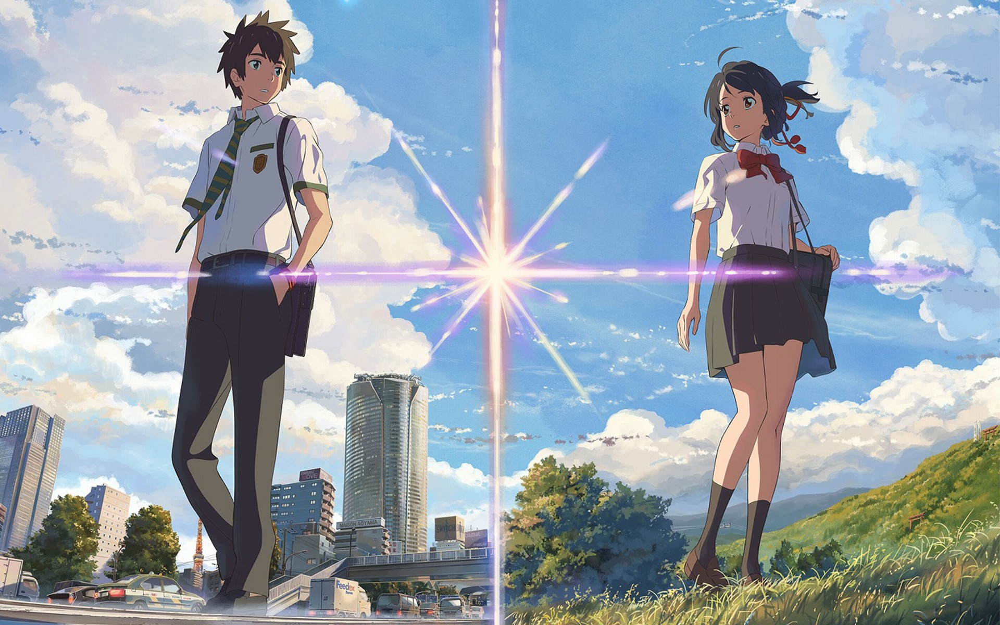
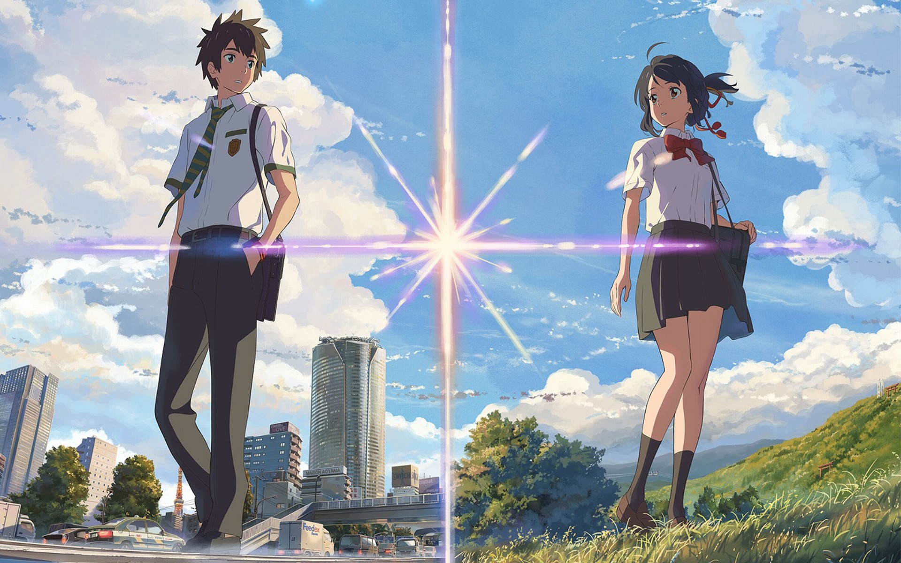
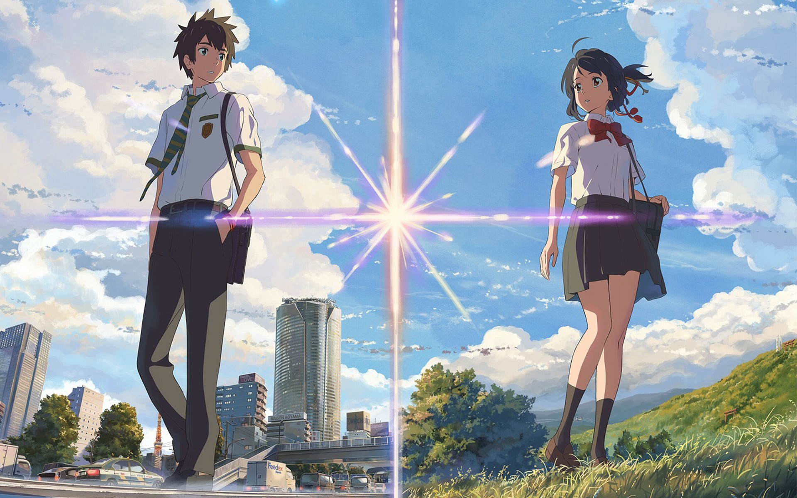
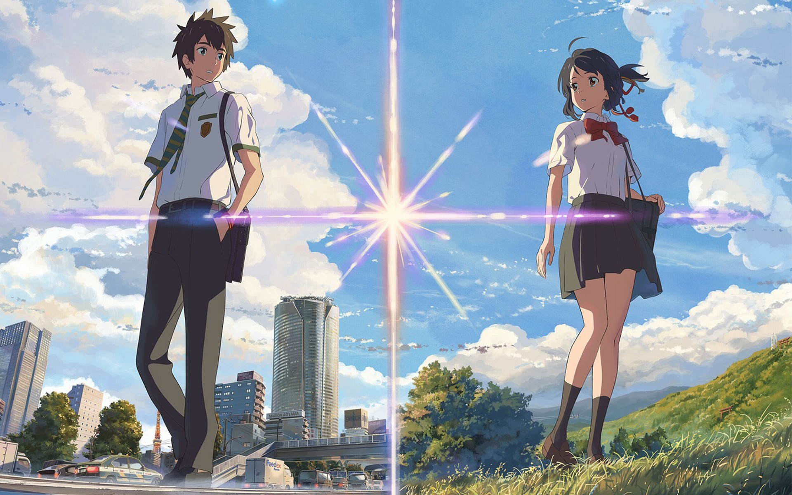

Two years have passed following the Tendoshuu's invasion of the O-Edo Central Terminal. Since then, the Yorozuya have gone their separate ways. Foreseeing Utsuro's return, Gintoki Sakata begins surveying Earth's ley lines for traces of the other man's Altana. After an encounter with the remnants of the Tendoshuu—who continue to press on in search of immortality—Gintoki returns to Edo.
Later, the regrouped Shinsengumi and Yorozuya begin an attack on the occupied Central Terminal. With the Altana harvested by the wreckage of the Tendoshuu's ship in danger of detonating, the Yorozuya and their allies fight their enemies while the safety of Edo—and the rest of the world—hangs in the balance. Fulfilling the wishes of their teacher, Shouyou Yoshida's former students unite and relive their pasts one final time in an attempt to save their futures.
As a wild youth, elementary school student Shouya Ishida sought to beat boredom in the cruelest ways. When the deaf Shouko Nishimiya transfers into his class, Shouya and the rest of his class thoughtlessly bully her for fun. However, when her mother notifies the school, he is singled out and blamed for everything done to her. With Shouko transferring out of the school, Shouya is left at the mercy of his classmates. He is heartlessly ostracized all throughout elementary and middle school, while teachers turn a blind eye.
Now in his third year of high school, Shouya is still plagued by his wrongdoings as a young boy. Sincerely regretting his past actions, he sets out on a journey of redemption: to meet Shouko once more and make amends.
Koe no Katachi tells the heartwarming tale of Shouya's reunion with Shouko and his honest attempts to redeem himself, all while being continually haunted by the shadows of his past.
Several years have passed since the end of The Great War. As the radio tower in Leidenschaftlich continues to be built, telephones will soon become more relevant, leading to a decline in demand for "Auto Memory Dolls." Even so, Violet Evergarden continues to rise in fame after her constant success with writing letters. However, sometimes the one thing you long for is the one thing that does not appear.
Violet Evergarden Movie follows Violet as she continues to comprehend the concept of emotion and the meaning of love. At the same time, she pursues a glimmer of hope that the man who once told her, "I love you," may still be alive even after the many years that have passed.
Stubborn, spoiled, and naïve, 10-year-old Chihiro Ogino is less than pleased when she and her parents discover an abandoned amusement park on the way to their new house. Cautiously venturing inside, she realizes that there is more to this place than meets the eye, as strange things begin to happen once dusk falls. Ghostly apparitions and food that turns her parents into pigs are just the start—Chihiro has unwittingly crossed over into the spirit world. Now trapped, she must summon the courage to live and work amongst spirits, with the help of the enigmatic Haku and the cast of unique characters she meets along the way.
Vivid and intriguing, Sen to Chihiro no Kamikakushi tells the story of Chihiro's journey through an unfamiliar world as she strives to save her parents and return home.
Mitsuha Miyamizu, a high school girl, yearns to live the life of a boy in the bustling city of Tokyo—a dream that stands in stark contrast to her present life in the countryside. Meanwhile in the city, Taki Tachibana lives a busy life as a high school student while juggling his part-time job and hopes for a future in architecture.
One day, Mitsuha awakens in a room that is not her own and suddenly finds herself living the dream life in Tokyo—but in Taki's body! Elsewhere, Taki finds himself living Mitsuha's life in the humble countryside. In pursuit of an answer to this strange phenomenon, they begin to search for one another.
Kimi no Na wa revolves around Mitsuha and Taki's actions, which begin to have a dramatic impact on each other's lives, weaving them into a fabric held together by fate and circumstance.